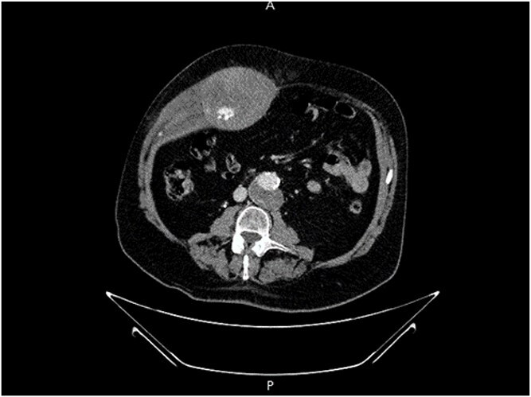
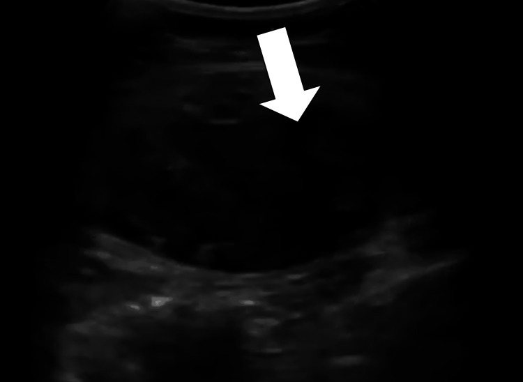
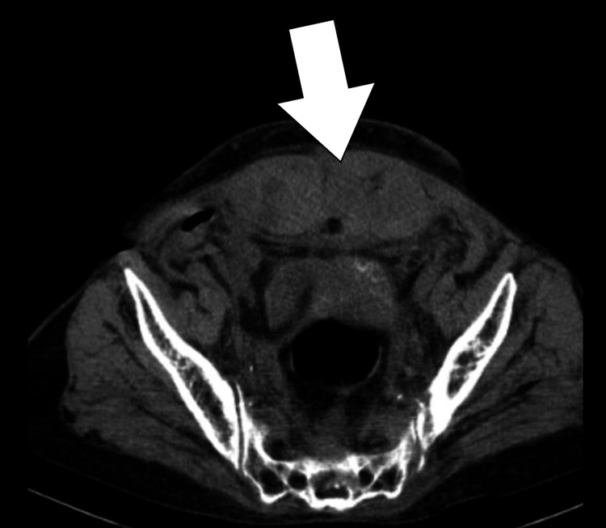

1936 — Tụ máu bao cơ thẳng bụng / Rectus sheath hematoma (RSH)
Tags: pattern:tu-mau-thanh-bung pattern:khoi-thanh-bung vung:thanh-bung vung:o-bung protocol:CT-bung-co-can-quang score:Berna incidentaloma:khong
Mức chắc chắn (certainty): tổng hợp y văn (literature synthesis) — số liệu lấy từ hai đoàn hệ hồi cứu (59 ca, PMC13561060; 44 ca, PMC12885678), một bài tổng quan kèm ca (PMC12812700), và ba ca nguyên văn có ảnh (PMC13426710; PMC13286293 — 2 hình; PMC13544793). Không có thử nghiệm ngẫu nhiên; các ngưỡng điều trị là thực hành đồng thuận, chỗ suy luận được ghi rõ.
Câu chốt: RSH là "bụng cấp" giả — khối máu trong bao cơ thẳng, không ở trong ổ phúc mạc. Ba con số quyết định: (1) CT đúng 95–100%, siêu âm chỉ 75–95% (PMC12812700); (2) trong đoàn hệ 59 ca, 27,1% phải can thiệp (nút mạch), tử vong 90 ngày 22,0%, và thoát cản quang là yếu tố dự báo can thiệp mạnh nhất — OR 17,46 (PMC13561060); (3) dưới đường cung (arcuate line) không có lá sau bao cơ → máu chảy xuống khoang trước bàng quang, gây cảm ứng phúc mạc và dễ bị mổ nhầm vì "bụng cấp" (PMC12812700).
1. Tổng quan bệnh học – cơ chế hình ảnh (TẠI SAO)
1.1 Giải phẫu quyết định hình thái máu tụ
- Cơ thẳng bụng (rectus abdominis) nằm trong bao cơ thẳng (rectus sheath) do cân chéo bụng tách thành lá trước và lá sau. Đường cung (arcuate line) là mốc thấp nhất của lá sau: trên đường cung cơ được bọc cả trước và sau; dưới đường cung chỉ còn lá trước + cân ngang (transversalis fascia) — không có lá sau.
- Hệ mạch: động mạch thượng vị trên (superior epigastric artery) từ động mạch ngực trong đi xuống; động mạch thượng vị dưới (inferior epigastric artery) từ động mạch chậu ngoài đi lên; hai hệ nối nhau trong cơ quanh rốn. Vì vậy máu tụ thường do rách nhánh mạch (ho, tiêm dưới da, chấn thương) hoặc rách cơ.
- TẠI SAO dưới đường cung là bẫy: không có lá sau giữ lại → máu lan tự do xuống khoang trước bàng quang (space of Retzius) và có thể sang khoang sau phúc mạc, không bị ép thành khối căng tại chỗ. Máu sát phúc mạc → đau + phản ứng thành bụng, bắt chước viêm phúc mạc/áp-xe. Trên CT, đây là lý do máu tụ "chảy dài" theo thành bụng dưới, không phải khối cầu.
- Trên đường cung, lá sau giam máu trong bao → khối hình thoi/oval trong cơ, căng đau nhưng ít cảm ứng phúc mạc.
1.2 Vật lý cản quang: đọc máu tụ theo HU
- Máu cấp đông lại: 50–80 HU, có khi tới 85 HU cho phần cục máu đông đặc; máu lỏng khoảng 45 HU (PMC12812700). So với cơ thẳng bình thường ~40–50 HU → máu cấp tăng đậm độ nhẹ, dễ bị bỏ qua nếu không so hai bên.
- Thoát cản quang hoạt động (active extravasation): ổ ≥ 90–130 HU, gần bằng độ đậm của động mạch kề bên, giữ nguyên hoặc lan rộng ở thì muộn — khác máu đông (đậm độ giảm dần, không đổi hình). Đây là dấu quyết định nút mạch: trong 36 ca có CTA, thoát cản quang OR 17,46 cho nhu cầu can thiệp (PMC13561060).
- Thể tích máu tụ cũng dự báo can thiệp (OR 1,002 mỗi đơn vị thể tích; bài gốc không ghi rõ đơn vị thể tích trong abstract) (PMC13561060).
- MRI (khi cần): hemoglobin thoái giáng theo thời gian — T1 sáng/T2 tối ở máu bán cấp sớm (methemoglobin nội bào), T1 và T2 đều sáng ở bán cấp muộn (methemoglobin ngoại bào); vỏ hemosiderin T2 tối ở thể mạn. MRI hữu ích khi mang thai (không bức xạ) và khi CT chưa phân biệt máu – u (PMC12812700).
1.3 Ai bị và vì sao
- Yếu tố nguy cơ: chống đông/kháng kết tập tiểu cầu (hay gặp nhất trong các ca có triệu chứng), ho mạnh, gắng sức, thai kỳ, tiêm dưới da/thành bụng, tăng huyết áp, béo, mổ bụng cũ, chấn thương nhẹ (PMC12812700; PMC13286293; PMC13426710).
- Tuổi/giới trong đoàn hệ 59 ca: trung vị 72 tuổi, 77,9% nữ (PMC13561060). Đoàn hệ 44 ca: tuổi trung bình 61,5 ± 15,3, thể tích máu tụ trung bình 512,9 ± 462,7 mm³ (PMC12885678).
- Thai kỳ: RSH là nguyên nhân đau bụng cấp hiếm nhưng dễ nhầm với nhau bong non, HELLP, vỡ tử cung; một tổng quan ghi tử vong mẹ 13% và bệnh suất chu sinh 50% trong các ca RSH thai kỳ được báo cáo (PMC12812700 — số từ y văn tổng hợp, không phải tỷ lệ dân số).
2. Mẫu hình + chẩn đoán phân biệt theo vị trí (gamut)
- Khối tăng đậm độ trong cơ thẳng, một bên, trên đường cung: máu tụ thể I; phân biệt u cơ/tổn thương cơ (desmoid, di căn), áp-xe cơ, tụ máu do tiêm, endometrioma thành bụng (tiền sử mổ lấy thai).
- Máu tụ lan xuống khoang trước bàng quang, dưới đường cung: thể II/III; phân biệt thoát vị bẹn/đùi nghẹt, áp-xe vùng chậu, khối bàng quang, tụ máu sau phúc mạc, vỡ khung chậu.
- Khối thành bụng + bụng cấp + thiếu máu cấp: nghĩ RSH đang chảy máu (thoát cản quang) — ưu tiên CTA và hội chẩn can thiệp; không chọc dò mù.
- Bối cảnh thai kỳ: phân biệt RSH với nhau bong non, vỡ tử cung, HELLP, xoắn buồng trứng, viêm tụy — siêu âm thành bụng + CT/MRI theo mức ưu tiên mẹ–thai.
- Mnemonic vị trí – cơ chế "RECTUS": Rupture of epigastric vessel, Extravasation (active), Cough/exertion, Trauma/injection, Under arcuate line (lan rộng), Surgery/anticoagulation.
3. Bảng so sánh phân biệt (ma trận đối chiếu)
| Thực thể (entity) | Hình ảnh điển hình (US/CT) | Chốt vào (rule-in) | Chốt loại (rule-out) | Gợi ý xác nhận |
|---|---|---|---|---|
| RSH thể I (Berna) | Khối oval/thoi trong cơ, tăng đậm độ, một bên, không vượt cân ngang | Trong bao cơ + không có lá sau bị đẩy | Dịch trong ổ phúc mạc hoặc túi thoát vị → không phải RSH | US đối chiếu hai bên; CT không cản quang đủ nếu ổn định |
| RSH thể II | Máu giữa cơ và cân ngang, có thể một/hai bên, chưa vào khoang trước bàng quang | Máu chạm cân ngang nhưng chưa xuống bàng quang | Máu trong khoang trước bàng quang → thể III | CT có cản quang, thì muộn |
| RSH thể III | Máu vượt cân ngang vào phúc mạc/khoang trước bàng quang, khối lớn, đẩy bàng quang | Máu xuống dưới đường cung + chèn ép bàng quang + tụt Hb | Không có thành phần trong bao cơ → nghĩ chảy máu sau phúc mạc/khung chậu | CTA ± nút mạch; theo dõi huyết động |
| Thoát vị bẹn/đùi nghẹt | Quai ruột/mỡ đi qua lỗ thoát vị, có cổ túi | Cổ túi + quai ruột + dấu tắc ruột | Khối trong cơ thẳng, không có cổ túi | US Valsalva; CT thì muộn |
| Áp-xe thành bụng | Ổ dịch vỏ ngấm thuốc, khí trong mô mềm, sốt | Khí + vỏ ngấm thuốc + sốt | Máu tụ không có khí, đậm độ đồng nhất theo tuổi máu | Chọc hút dưới hướng dẫn; cấy |
| U mô mềm/di căn thành bụng | Khối đặc ngấm thuốc không đều, có thành phần hoại tử | Ngấm thuốc tiến triển + bờ không đều + tiền sử u | Không ngấm thuốc như mô đặc, có mức cặn – huyết thanh | MRI T1/T2 + sinh thiết nếu nghi |
| Tụ máu sau phúc mạc | Máu quanh cơ thắt lưng – chậu, dưới cân | Lan theo khoang sau phúc mạc, không trong bao cơ | Thành phần trong bao cơ thẳng → RSH | CTA; tìm nguồn (ĐM chậu, thắt lưng) |
Dấu hiệu lâm sàng – hình ảnh phối hợp
- Nghiệm pháp Fothergill: khối vẫn sờ thấy và cố định khi bệnh nhân gồng cơ bụng/ngẩng đầu → tổn thương thành bụng, không phải trong ổ phúc mạc.
- Nghiệm pháp Carnett: đau tăng khi gồng cơ bụng → nguồn đau ở thành bụng.
- Cullen sign (bầm quanh rốn) hiếm — xuất hiện muộn, không dùng để loại trừ.
- US: ổ echo hỗn hợp, không đồng nhất, trong cơ thẳng; máu cấp có thể gần như đồng âm với cơ → luôn so bên đối diện và ấn đầu dò (máu tụ không đổi hình theo nhịp thở như quai ruột).
4. Protocol chụp + hệ phân độ Berna
4.1 Protocol
- Siêu âm thành bụng (đầu tay, có thai): đầu dò thẳng tần số cao, quét dọc và ngang cả hai cơ thẳng từ bờ sườn đến xương mu; đánh dấu vị trí so với rốn/đường cung; bật Doppler màu tìm ổ phổ bất thường (không thay thế CTA).
- CT bụng–chậu có cản quang, lát ≤ 3 mm, ba thì khi nghi chảy máu: không cản quang → động mạch (25–35 s) → tĩnh mạch/muộn (70–90 s). Thì không cản quang giúp phân biệt máu cấp với mô đặc/khối u; thì muộn xác nhận thoát cản quang hoạt động và dấu "blush" lan rộng.
- CTA (nếu nghi thoát mạch) theo cùng protocol; ghi rõ vị trí ổ thoát (thượng vị trên/dưới, nhánh cơ) để can thiệp chọn mạch.
- Đo và báo cáo: thể tích (mL/cm³), kích thước 3 chiều, thể Berna, có/không thoát cản quang, có vào khoang trước bàng quang, chèn ép bàng quang, mức độ đẩy phúc mạc.
- MRI khi có thai hoặc cần phân biệt máu – u: T1 ± fat-sat, T2, DWI; không dùng gadolinium thường quy trong thai.
4.2 Phân độ Berna (1996) + ngưỡng xử trí
flowchart TD
A[Khoi tang dam do thanh bung tren CT] --> B{Co trong bao co thang?}
B -->|Khong| Z[Tim nguon khac: sau phuc mac, thoát vị, u]
B -->|Co| C{The Berna}
C -->|I| D[Huyet dong on dinh: theo doi noi khoa]
C -->|II| E{Co thoat can quang?}
C -->|III| F{Huyet dong on dinh?}
E -->|Khong| D
E -->|Co| G[Doi hoi can thiep: nut mach]
F -->|Co| D
F -->|Khong| H[Hoi suc + nut mach hoac mo]
D --> I[Lap lai CT/Hb neu xau di]
G --> J[Chup lai 24-48 gio]
H --> J
- Berna I: máu trong cơ, cơ to, oval/thoi, một bên, không bóc tách cân → hầu hết ổn định, điều trị nội khoa.
- Berna II: máu giữa cơ và cân ngang, một hoặc hai bên, chưa vào khoang trước bàng quang → theo dõi sát; nút mạch nếu thoát cản quang/tụt Hb.
- Berna III: máu vượt cân ngang vào phúc mạc hoặc khoang trước bàng quang → nguy cơ tụt huyết áp, cần hồi sức, nút mạch là lựa chọn đầu tay ở người không mang thai; mổ khi không kiểm soát được hoặc có biến chứng (PMC12812700; PMC13544793).
- Ngưỡng thực hành (từ đoàn hệ 59 ca): can thiệp 27,1%, tử vong 90 ngày 22,0%; tuổi (OR 1,088 mỗi năm) và mức giảm Hb (OR 1,086 mỗi g/L) dự báo tử vong (PMC13561060). Chỉ số bệnh nền CCI ≥ 6 dự báo tử vong tốt hơn kích thước máu tụ (AUC 0,732; OR 1,46 mỗi điểm) (PMC12885678).
- Xử trí nội khoa: ngừng/bắc cầu kháng đông, đảo ngược kháng đông khi cần, bù dịch – máu, giảm đau, thắt lưng bụng (binder) khi dung nạp; theo dõi Hb/Hct, Lactate, huyết áp, nước tiểu.
- Can thiệp: nút mạch chọn lọc ĐM thượng vị (keo/coil) khi thoát cản quang hoặc Hb tiếp tục giảm; mổ khi shock, máu tụ căng nhanh, thất bại nút mạch (PMC13544793).
5. Biến thể bình thường và cạm bẫy
- Cơ thẳng không đối xứng (do tập luyện, mổ cũ, teo) → so sánh đậm độ chứ không chỉ so kích thước; đừng gọi "khối" khi chỉ là bó cơ lớn hơn.
- Máu tụ cấp gần đồng âm trên US → dễ bỏ sót; luôn so bên đối diện, ấn đầu dò, và Doppler; nếu nghi, chuyển CT.
- Dưới đường cung = "bụng cấp" giả: đau + phản ứng thành bụng + tụt Hb nhưng ổ phúc mạc trống; đừng mổ thăm dò khi chưa loại RSH — CT là chốt.
- Chọc dò/dẫn lưu mù khối thành bụng có thể làm bùng phát chảy máu (đặc biệt khi đang thoát cản quang) → chỉ chọc khi đã loại máu tụ đang chảy hoặc có hướng dẫn hình ảnh và hội chẩn.
- "Đuôi mèo" (cat's tail): một số mô tả dùng cho máu tụ thuôn nhọn theo ĐM thượng vị dưới; hiện chưa tìm thấy trong y văn open-access kiểm chứng — dùng như mô tả hình thái, không phải tiêu chuẩn chẩn đoán.
- Satisfaction of search: thấy máu tụ không được dừng — tìm ổ thoát cản quang, máu sau phúc mạc, vỡ khung chậu, thuốc chống đông và nguyên nhân ho/gắng sức.
- Thai kỳ: RSH có thể tự giới hạn, nhưng tụt Hb nhanh là chỉ định can thiệp; tránh chụp CT không cần thiết, ưu tiên US/MRI, và không dùng ergometrine (co mạch) khi nghi bóc tách/co thắt mạch.
6. Tự lượng giá — Blind Quiz
Ca 1 — Nam 68 tuổi, ho kéo dài, đau hông phải, Hb giảm 2 g/dL.

- Gợi ý: khối trong thành bụng, không thấy trong ổ phúc mạc; bệnh nhân không chấn thương.
- Câu hỏi: Khối nằm ở khoang nào? Có dấu hiệu gì cho biết đang chảy máu? Hai việc cần làm tiếp theo?
Bấm để hiện đáp án (findings + chẩn đoán)
- Findings: khối lớn tăng đậm độ trong bao cơ thẳng phải, có ổ đậm độ cao bên trong (blush) tương đương động mạch → thoát cản quang hoạt động từ ĐM thượng vị trên; không có máu tự do trong ổ phúc mạc.
- Chẩn đoán: RSH lớn, đang chảy máu (có thoát cản quang hoạt động từ ĐM thượng vị trên) — cần phân độ Berna đầy đủ để quyết định nút mạch hay theo dõi. Cơ chế: rách nhánh ĐM thượng vị trên sau ho; hoạt động cản quang giữ nguyên/lan ở thì muộn = máu còn chảy, không phải cục đông.
- Xử trí: hồi sức + đảo ngược kháng đông nếu có, CTA thì muộn để bản đồ mạch, nút mạch chọn lọc (keo/coil); mổ nếu không ổn định. Đoàn hệ 59 ca: thoát cản quang OR 17,46 cho nhu cầu can thiệp.
- Nguồn: J Surg Case Rep 2026, PMC13426710, CC BY 4.0.
Ca 2 — Nữ 64 tuổi, warfarin, INR cao, đau bụng dưới + khối sờ thấy; siêu âm thành bụng.

- Câu hỏi: Mô tả khối? Vì sao không gọi là "khối u phần mềm"? Bước tiếp theo để phân độ?
Bấm để hiện đáp án
- Findings: ổ echo hỗn hợp, không đồng nhất, trong cơ thẳng bụng trái, không có tưới máu trong lòng; không thấy dịch tự do ổ bụng.
- Chẩn đoán: RSH — bối cảnh chống đông vượt mức + khối thành bụng; không phải u vì không có thành phần mô đặc ngấm thuốc và thay đổi theo thời gian/điều trị.
- Tiếp theo: CT có cản quang 3 thì để phân Berna I–III, tìm thoát cản quang, đo thể tích và đánh giá khoang trước bàng quang; theo dõi Hb và huyết động.
- Nguồn: Cureus 2026, PMC13286293, CC BY 4.0.
Ca 3 — Cùng bệnh nhân Ca 2, CT cho thấy máu xuống dưới đường cung.

- Câu hỏi: Đây là thể mấy? Vì sao bệnh nhân có phản ứng thành bụng dù không viêm phúc mạc? Khi nào chuyển nút mạch?
Bấm để hiện đáp án
- Findings: máu tụ lớn trong cơ thẳng trái, lan xuống khoang trước bàng quang, đẩy bàng quang ra sau; không có khí, không có thoát cản quang trong thì này.
- Chẩn đoán: RSH thể III (vượt cân ngang vào khoang trước bàng quang). Phản ứng thành bụng do máu sát phúc mạc dưới đường cung — nơi không có lá sau giữ máu, chứ không phải viêm phúc mạc thật.
- Ngưỡng can thiệp: thoát cản quang, Hb tiếp tục giảm, huyết động không ổn → nút mạch; nếu ổn định, điều trị nội khoa + theo dõi sát (ca này hồi phục với điều trị nội khoa).
- Nguồn: Cureus 2026, PMC13286293, CC BY 4.0.
Bài liên quan chéo
- 110 – Giải phẫu bụng cắt lớp: khoang sau phúc mạc & thành bụng
- 160 – Bụng cấp hố chậu & tắc ruột
- 3061 – Nốt thành bụng mới sau mổ: áp-xe hay di căn lỗ trocar
- 1449 – Tiêm nội nhãn ở bệnh nhân dùng thuốc chống đông (nguyên tắc ngừng thuốc)
Ảnh
- Tên file:
1936_tu-mau_{Modality}_{PMCID}.jpg. Nguồn + giấy phép từng ảnh:images/CREDITS.md. - Không dùng ảnh CC BY-NC-ND cho ảnh ghép; các ảnh trong bài là nguyên bản.
Không dùng để chẩn đoán độc lập khi chưa có người hướng dẫn.